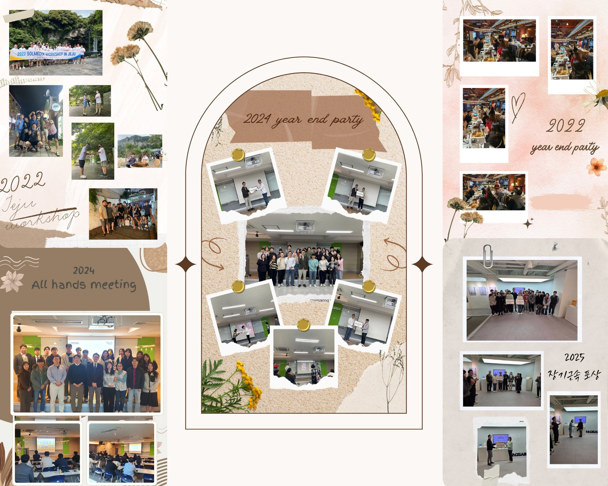

사진첩 바로가기Internal HR Portal
HR Lounge
구성원의 온보딩부터 성장까지, 인사 제도와 업무 도구를
한 곳에서 연결하고 지원합니다.
Main Category
HR Lounge 주요 메뉴
FAQ
자주 묻는 HR 질문
구성원이 반복해서 찾는 온보딩, 제도, 업무 도구, 서식 자동 발급 관련 답변을 빠르게 확인할 수 있습니다.
신규입사자는 어떤 순서로 온보딩 자료를 보면 되나요?
신규입사자 가이드에서 입사 전, 입사 당일, 첫 주 체크리스트를 순서대로 확인하면 됩니다.
연차와 복리후생 기준은 어디에서 확인하나요?
HR Guide의 연차 제도, 복리후생 제도, 경조사 안내 게시글에서 최신 기준을 관리합니다.
Google Workspace와 그룹웨어 안내는 어디에 있나요?
Work Tool 메뉴에서 메일, 드라이브, 캘린더, 전자결재, 사내 게시판 사용법을 확인할 수 있습니다.
서식 자동 발급이나 문의는 어디로 가면 되나요?
Help Desk 메뉴에서 FAQ와 재직증명서, 경력증명서, 명함신청 자동 발급 절차를 모아 관리합니다.
HR Lounge Blog
Culture
HR Lounge 콘텐츠를 블로그 형식으로 작성하고 관리합니다.
Article Studio
수준 높은 HR 아티클 작성
목록, 상세 본문, 태그와 추천 글이 함께 발행되는 기사형 글쓰기 도구입니다.